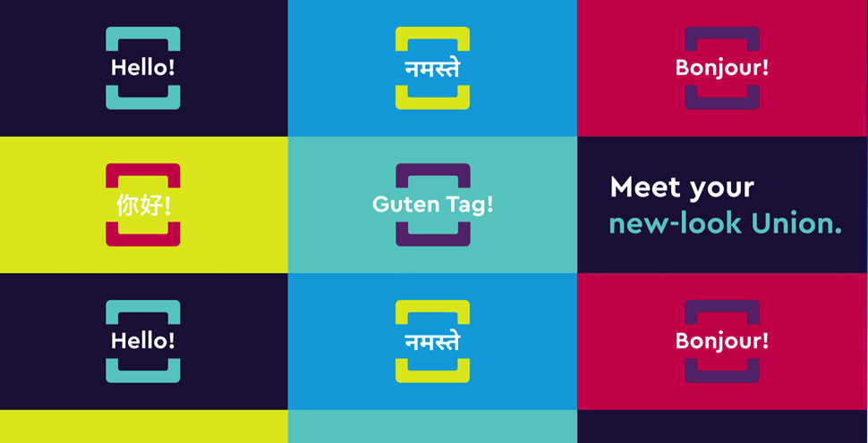
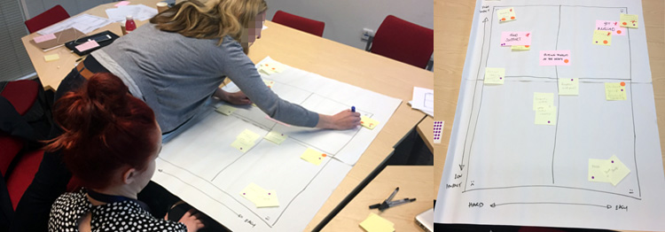
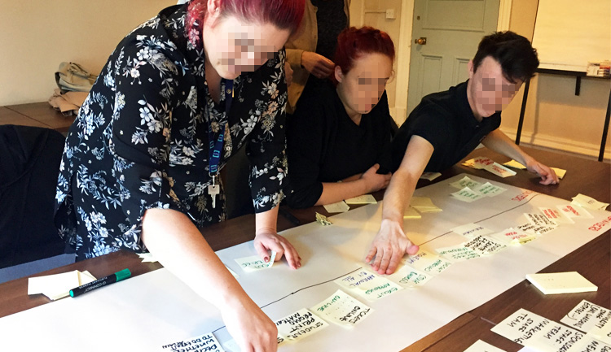
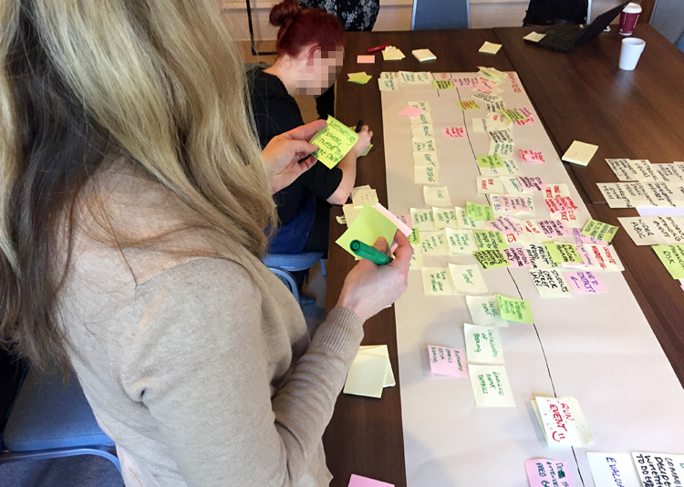

<div id="single-portfolio">
  <div id="portfolio-details" class="container"> <a class="close-folio-item" href="#"><i class="fa fa-times"></i></a> 
    <div class="row">
      <div class="col-sm-9">
        <div class="project-info">
          <h2>University of Nottingham Students' Union UX Discovery</h2>
          <p>The UoN Students' Union wanted to scope a new digital offer to improve the customer experience across all their digital channels, with a focus on membership management and self-service. Multiple microsites developed organically over time by SU committee members, all with different URLs were making the user journey confusing and disjointed.</p>
          <h3><strong>Phased approach</strong></h3>
          <p>I took a user centred approach to planning and delivering a series of workshops and remote surveys with senior stakeholders in the students' union, SU officers, and students, to understand the context that the service needs to operate within, and identify the users of the service and their needs. This would give us a picture of the existing service landscape and an idea of what our initial approach would explore. </p>
          <p><strong>Phase one</strong></p>
          <p>We worked with Senior staff and the project sponsor in the Students' Union, to understand the shape of the problem, assess the strategic landscape, analyse existing data, and establish who should be involved in the next round of workshops.</p>
          <p></p>
          <p><strong>Phase two</strong></p>
          <p>The next stage involved engaging key stakeholders from three strategic areas of the Students' Union, identified as priorities from phase one. These included events, advice and welfare, and marketing and communications.</p>
          <p></p>
          <p><strong>Phase three</strong></p>
          <p>The final phase involved reaching out to the wider student population to understand what they wanted most from their Students' Union, and find out how they access the content they need.</p>
          <p></p>
          <p>Results were synthesised, and top line analysis presented back to the senior team iteratively after each phase. Once all sessions were completed, the combined results were analysed and a series of recommendations to inform a new digital offer presented back to the team, with a clear set of priorities.</p>
        </div>
      </div>
      <div class="col-sm-3">
        <div class="project-details">
          <h3>Project Details</h3>
          <p><span>Client: </span>University of Nottingham Students' Union</p>
          <p><span>Date: June</span> 2015</p>
          <p><span>Tag:</span> user research</p>
          <hr />
           <p>"Well done to you and team. I really like the feedback format. That will be really useful in terms of next steps for them...fantastic!"<br />
            - <strong>Nick Stocks, business partner</strong></p>
             <p>"Many thanks for your time on the project and today. Its given us a good starting point and will certainly help with the short term solutions."<br />
            - <strong>Natalie Martin, Director of Customer Experience, Insight and Marketing, University of Nottingham Students' Union</strong></p>
        </div>
      </div>
    </div>
  </div>
</div>
